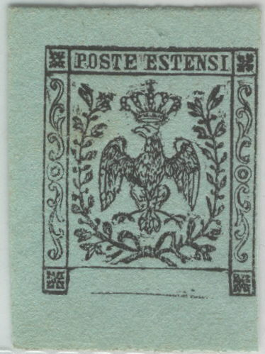

Usigli reprint in green of all values in a minisheet. I've also seen similar sheetlets printed on lilac and blue paper.
Return To Catalogue - Papal States, 1867 issue, reprints - Romagna
Note: on my website many of the
pictures can not be seen! They are of course present in the
catalogue;
contact me if you want to purchase the catalogue.
Usigli was a stamp forger from Florence (Italy). More on
Usigli can be found in "Philatelic Forgers, their Lives and
Works" by V.E.Tyler.
According to https://peoplepill.com/people/carlo-usigli, Elia
Carlo Usigli was born on March 16, 1812 in Correggio and died in
Florence, April 3, 1894. He apparently was a chess player, a
publicist and book dealer in Florence.
Usigli obtained the plates of the stamps of Romagna (together with genuine obliterators). He made private reprints and essays (see below) with these and with retouched plates. He sold the plates to a certain Bonasi, who sold them again to the stamp dealer Moens in Belgium.
Usigli reprint in green of all values in a minisheet. I've also
seen similar sheetlets printed on lilac and blue paper.
"Saggio" essays made of Romagna by Usigli:


These are 'essays' printed by Usigli ment for the stamp dealer Moens. The central part of the design is
often broken and badly printed. The word 'Saggio' is printed at
the bottom. My personal copies are printed on rather thick ribbed
paper.
In 1878 (according to Tyler), Usigli obtained the printing plates of the 1867 issue of the Papal States (Roman States). He made 'essays' and reprints out of these (see examples below). See also 'Handbuch der Neudrucke' by Paul Ohrt, 1912, pages 200-202.
'Essay' strips of the Papal States, made by Usigli:
'Usigli's essay strips', in the first strip the last two columns
are missing, in the second strip the first two columns are
missing
Usigli reprints of the Papal States:
Usigli reprints. Apparently Usigli did not make reprints of the 5
c and 10 c values (see Tyler).
The postal stationary of Sardinia are the first postal stationary to be issued in the world. Forgeries were made of these duty covers in 1875 by Usigli using the original plates (see Tyler). I have no further information or images available.

I've been told that these are Usigli reprints of the 1853 issue
of Sardinia. I have no further information.
V.E.Tyler in his book "Philatelic Forgers, their Lives and Works' mentions that the Usigli made a photo-mechanical forgery of the 1857 25 c value of Parma in vermilion on ribbed paper. He also made tete-beche pairs.

This might be the tete-beche forgeries which the Tyler book
mentions. I am not sure however.
Could this be an forged Usigli essay for Modena? The bottom part
is missing and the word "Saggio" is added to the text
(reduced size). I've also seen this 'essay' on other colors of
paper (green, lilac, brown, yellow, white). Some sources say that
these are Usigli reprints (Usigli was a printer who also
reprinted Papal States stamps). They do indeed look very similar
to the Romagne Usigli reprints, where the word "Saggio"
is also printed at the bottom.



Some other 'proofs' probably from the same origin.
{kind=link}